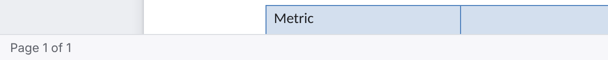
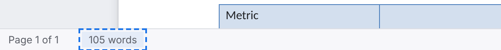
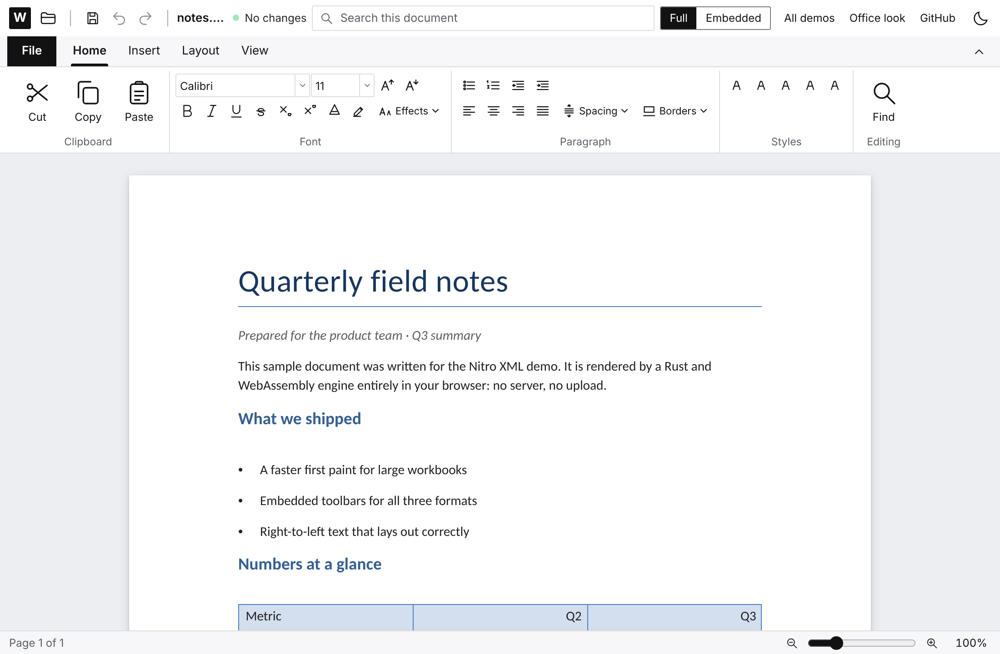
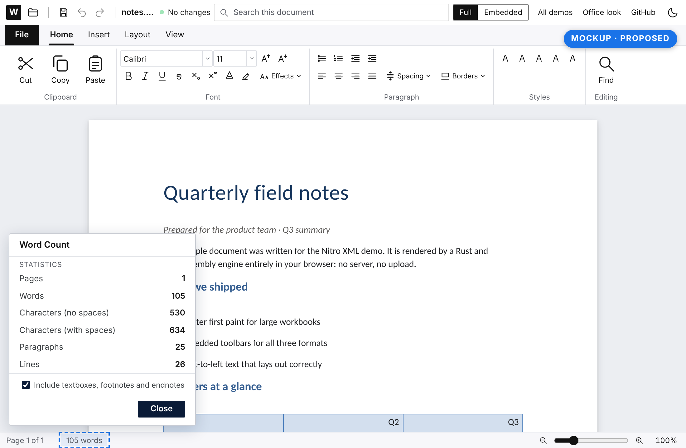

See the word count in the status bar, with Word's Word Count box on click
Building: draft PR #605 open (nightly 2026-11-21); awaits screenshot sign-off before merge.
Approve: tap 👍 on the issue · Decline: tap 👎
Close-up of the change




Full screen


Today: the status bar only says "Page 1 of 1"; there is no way to see how long the document is.


Mockup: "105 words" sits next to the page number; clicking it opens a Word Count box (pages, words, characters, paragraphs, lines), like Word.
Tap an image to open it full size.
Why
Word shows a live word count at the bottom left of every document, and anyone writing to a length limit checks it constantly. Nitro's status bar only shows the page number, so users have to paste text elsewhere to count it. A live count next to the page number, plus the familiar Word Count box on click, matches Word exactly (Google Docs has the same under Tools > Word count).
Definition of done
- Status bar shows "N words" right after "Page X of Y" and updates within about 300 ms after typing, paste, delete and undo/redo.
- With text selected it shows "S of N words", like Word.
- Clicking the count opens a keyboard-accessible Word Count box (pages, words, characters with and without spaces, paragraphs, lines); Esc or Close dismisses it.
- Counts match Word on notes.docx (105 words) and three corpus files; Playwright test covers count, selection and dialog; bundle-budget and all required checks green.
Approve: tap 👍 on the issue · Decline: tap 👎